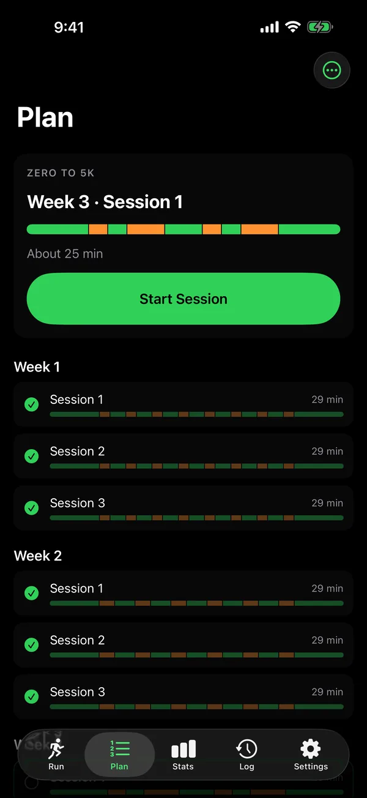
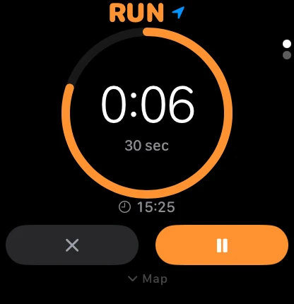
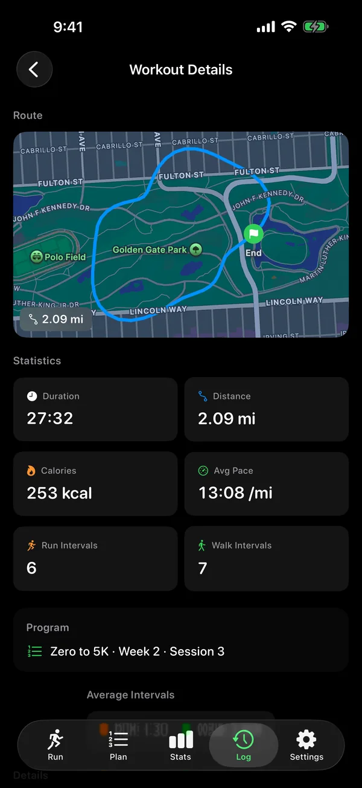

Run when it says run. Walk when it says walk.
Canter is the run walk interval timer for iPhone and Apple Watch. It calls out every switch, so you can lock your phone, put it in your pocket and keep moving. Two Zero to 5K plans are included.
$4.99 once. No subscription.
Why the walk breaks work
Running nonstop is what makes a first 5K feel out of reach. Planned walk breaks let you keep going for the whole session, which is how coaches recommend building endurance. Canter keeps the time, so you only have to keep moving.
Zero to 5K in ten weeks, or thirteen
Two guided plans take you from one minute jogs to running a full 5K. The standard plan takes ten weeks. A gentler one climbs in smaller steps over thirteen, and a short questionnaire suggests the one that fits.
Each week has three sessions, scripted for you: a five minute walk to warm up, the run and walk intervals, then a five minute walk to cool down. The last session is a real 5K, measured by distance, not by the clock.
Start any session on iPhone or Apple Watch. Your progress stays in sync.
- Week 1, about 29 minutes: a 5 minute walk, then eight runs of 1 minute, with 1.5 minute walks between, then a 5 minute walk.
- Week 2, about 29 minutes: a 5 minute walk, then six runs of 1.5 minutes, with 2 minute walks between, then a 5 minute walk.
- Week 3, about 25 minutes: a 5 minute walk, then runs of 1.5, 3, 1.5 and 3 minutes, with walks of 1.5, 3 and 1.5 minutes between, then a 5 minute walk.
- Week 4, about 32 minutes: a 5 minute walk, then runs of 3, 5, 3 and 5 minutes, with walks of 1.5, 2.5 and 1.5 minutes between, then a 5 minute walk.
- Week 5, about 31 minutes: a 5 minute walk, then three runs of 5 minutes, with 3 minute walks between, then a 5 minute walk.
- Week 6, about 31 minutes: a 5 minute walk, then two runs of 8 minutes, with a 5 minute walk between, then a 5 minute walk.
- Week 7, about 33 minutes: a 5 minute walk, then two runs of 10 minutes, with a 3 minute walk between, then a 5 minute walk.
- Week 8, about 25 minutes: a 5 minute walk, then one 15 minute run, then a 5 minute walk.
- Week 9, about 35 minutes: a 5 minute walk, then one 25 minute run, then a 5 minute walk.
- Week 10, the finale: a 5 minute walk, then a 5K run, measured by distance, then a 5 minute walk.
Read the plan week by week
- Week 1. All three sessions: a 5 minute walk, then eight runs of 1 minute, with 1.5 minute walks between, then a 5 minute walk.
- Week 2. All three sessions: a 5 minute walk, then six runs of 1.5 minutes, with 2 minute walks between, then a 5 minute walk.
- Week 3. All three sessions: a 5 minute walk, then runs of 1.5, 3, 1.5 and 3 minutes, with walks of 1.5, 3 and 1.5 minutes between, then a 5 minute walk.
- Week 4. All three sessions: a 5 minute walk, then runs of 3, 5, 3 and 5 minutes, with walks of 1.5, 2.5 and 1.5 minutes between, then a 5 minute walk.
- Week 5. All three sessions: a 5 minute walk, then three runs of 5 minutes, with 3 minute walks between, then a 5 minute walk.
- Week 6. All three sessions: a 5 minute walk, then two runs of 8 minutes, with a 5 minute walk between, then a 5 minute walk.
- Week 7. All three sessions: a 5 minute walk, then two runs of 10 minutes, with a 3 minute walk between, then a 5 minute walk.
- Week 8. Sessions 1 and 2, runs of 12 and 8 minutes, with a 3 minute walk between. Session 3, one 15 minute run. Each one starts and ends with a 5 minute walk.
- Week 9. Session 1, one 20 minute run. Session 2, one 22 minute run. Session 3, one 25 minute run. Each one starts and ends with a 5 minute walk.
- Week 10. Session 1, one 25 minute run. Session 2, one 30 minute run. Session 3, a 5K run, measured by distance. Each one starts and ends with a 5 minute walk.

Your watch can run the whole workout
Leave your iPhone at home. Canter on Apple Watch works on its own: it calls every switch out loud, taps your wrist in a different pattern for run and for walk, and shows your heart rate zone as you go.
Every mile or kilometer, a tap on the wrist and your split on the screen. The distance is spoken too, through the first fifteen.
When you finish, the workout lands in the iPhone log by itself and counts toward your Activity rings.

How it works
-
Set your intervals
Choose one of six presets, pick up the next session of your plan, or set your own run and walk lengths, from ten seconds to thirty minutes. Count by time or by distance.
-
Start running
Lock the phone and put it away. A voice calls every switch, with a bell and a haptic, and the timer keeps going with the screen off.
-
Review your route and pace
Each workout saves its time, distance, pace and how many runs and walks you did. With GPS on, you get a map of the route too, and with your permission the workout goes to Apple Health.

$4.99 once
No subscription, no account, no ads. The big 5K coaching apps charge 40 to 80 dollars a year. Canter is one purchase, and the training plans come with it.
Your routes, your GPS positions and anything from Apple Health are never sent to us.
Start with week 1, session 1
It takes about half an hour: a five minute walk, eight one minute runs with walks between, and a five minute walk to finish.
Needs an iPhone with iOS 17 or later. The Apple Watch app is included.
Android is in closed testing.